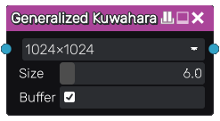

Generalized Kuwahara node
The Generalized Kuwahara node applies an edge-preserving smoothing filter to its input.
This has better visual qualities compared to the classic implementation, but is still inferior to the anisotropic variant at preserving directional details.
Inputs
The Generalized Kuwahara node has a single input.
Outputs
The Generalized Kuwahara node outputs the result of the smoothing filter.
Parameters
The Generalized Kuwahara node accepts the following parameters:
Resolution used to sample the input.
Size of the filter.
Whether a Buffer is used to sample the input before the filter.